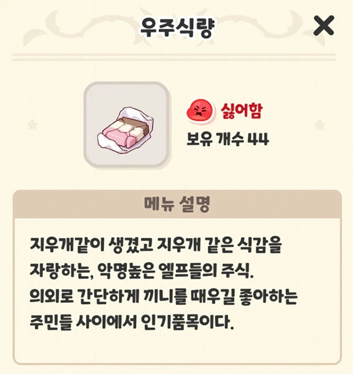

17 · 10 · 5 분 전 · 원문

우주식량
엘프들의 주식
야채죽에 케이크 때려넣고 끓여도 우주식량보다 맛있다고
수집 당시 댓글 10개
초코마시쩡 · 1 시간 전
호랑냥표 · 1 시간 전
배똘 · 1 시간 전
업그레이드 해서 먹엉
쀼슝빠슝뽀슝 · 1 시간 전
하이디 나오니까 재밌더라
스크랩 · 1 시간 전
삼색아이스크림이네
아르피쥐 · 45 분 전
렘바스!
부두술사 · 7 분 전
WHYYYYYY · 4 분 전
밤귀신 · 2 분 전
철학전공자 · 2 분 전
내용물은 영양만점임 닭이 들어갔던고같은데
댓글
수집 당시 댓글 10개
초코마시쩡 · 1 시간 전
호랑냥표 · 1 시간 전
배똘 · 1 시간 전
업그레이드 해서 먹엉
쀼슝빠슝뽀슝 · 1 시간 전
하이디 나오니까 재밌더라
스크랩 · 1 시간 전
삼색아이스크림이네
아르피쥐 · 45 분 전
렘바스!
부두술사 · 7 분 전
WHYYYYYY · 4 분 전
밤귀신 · 2 분 전
철학전공자 · 2 분 전
내용물은 영양만점임 닭이 들어갔던고같은데